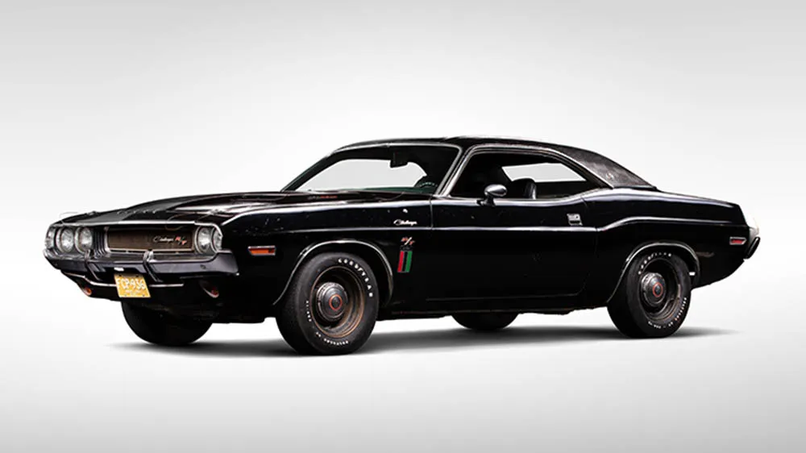

The Legacy of the Dodge Challenger
When first launched back in 1970, the Dodge Challenger was Mopar’s ultimate answer to the pony car craze. the modern day Hellcat is an ultimate answer to the dominating history of stangs. It shared a platform with the Plymouth Barracuda but stood apart with bold styling, a longer wheelbase, and a broad engine lineup.
Dodge challenger quickly became iconic due to the bold aggressive look and that fear striking performance — especially when we talk about the legendary and historic models like 426 HEMI and R/T that still shine to this date. after a little break from Dodge, the Challenger was back in 2008 and climbed to the top earning its spot as the most menacing muscle car on the market.
Modern Power: 2023–2024 Challenger Lineup
The final years of the Challenger in itself proved to be a nerve recking thunderous sendoff, easily featuring one of the most powerful V8 engines that were ever put into a "street legal" car doing 0-100 kmph in 1.66 seconds:
- Challenger R/T: 5.7L V8 | 375 hp | 0–100 km/h in => 5.3s
- SRT Hellcat: 6.2L Supercharged V8 | 717–807 hp | 0–100 km/h in => 3.6s
- SRT Demon 170 (Limited): 6.2L Supercharged V8 | 1025 hp | 0–100 km/h in => 1.66s (on E85 fuel!)
Rear-wheel drive topped with optional AWD on select trims, the Challenger is a perfect symphony between brute power with bold style.
Performance Stats
Hellcat
Top Speed: => 327 km/h
0–100 km/h: => 3.6s
Horsepower: 807 hp
Demon 170
Top Speed: => 346 km/h
0–100 km/h: => 1.66s
Horsepower: 1025 hp
Did You Know?

- The original Challenger T/A was built specially for Trans Am racing in 1970.
- The 2018 SRT Demon became the first production car to lift its front wheels off the ground soaring the skies.
- Dodge branded its modern Challenger as the “last call” for gas powered muscle cars as they switch to electric for future.
- Learn more about the Challenger ->